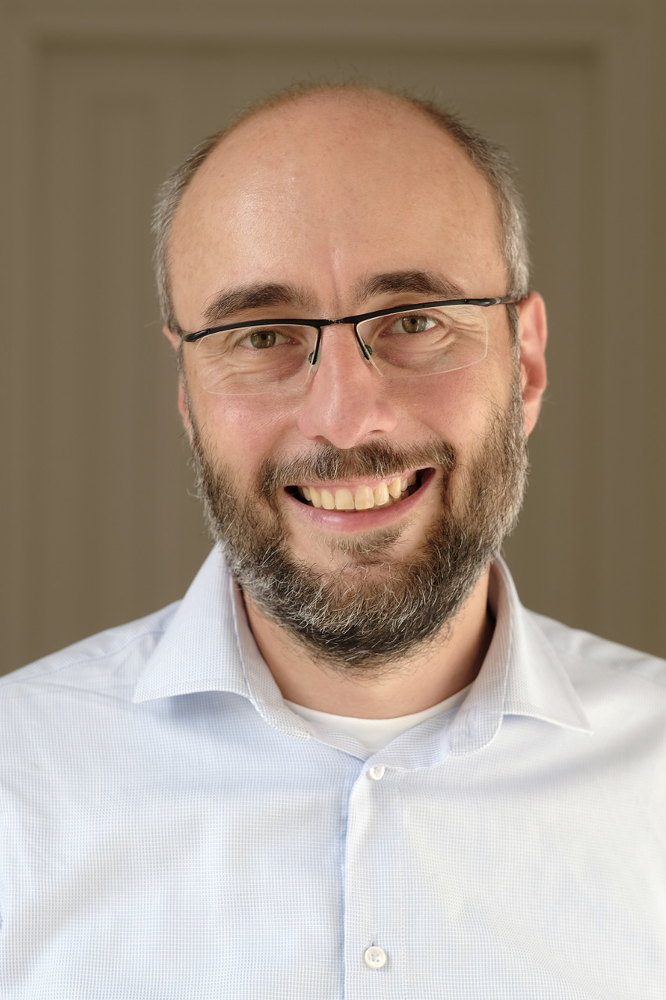

<div class="uk-grid">

  <div class="uk-width-3-4@m">
    <div class="uk-panel cn-pad-right">

<h1>Keynotes</h1>

<h2 id="key1" class="cn-blue" style="clear: both; padding-top: 0.5em;">AI can help improve network security. From better attacks to better defenses</h2>

<h3 class="cnsm-header">Sebastian Garcia</h3>

<p>For many years machine learning help optimized resources in network management. It then help to better plan network topologies, bandwidth control, BGP routes, and finally security. Although security defenses is implemented in servers and devices, much of the attacks are simulated and conducted in the network. With the advent of LLMs much technology was dedicated to better explain, to better understand and validate routers configurations, graph analysis, and lately to help the incident responders. However, in security LLMs have a much needed role: to produce better attacks, to produce better detections and to produce better humans.</p>

<h4>Biography</h4>

<p>

<i>Sebastian Garcia</i> is an Assistant Professor and security researcher specializing in applied machine learning for network traffic and malware detection. He founded the Stratosphere Laboratory at the Czech Technical University, focusing on impactful security research using machine learning. Committed to protecting digital rights, he advocates for free software and machine learning tools. Sebastian's expertise includes machine learning for security, honeypots, malware detection, IDS/IPS, social network security, distributed scanning (dnmap), keystroke dynamics, fake news, Bluetooth analysis, privacy protection, intruder detection, P2P security, trust models, and microphone detection with SDR (Salamandra). With a broad teaching and industry background, he has contributed to various conferences and co-founded MatesLab hackspace in Argentina and the Independent Fund for Women in Tech.</p>

<p>
 - Mastodon: https://infosec.exchange/@eldraco<br/>
- Twitter: https://twitter.com/eldracote<br/>
- ResearchGate: https://www.researchgate.net/profile/Sebastian_Garcia6<br/>
- Stratosphere Laboratory: http://stratosphereips.org/<br/>
- Women in Tech Fund: https://womenintechfund.org/<br/>
</p>

<p>The Stratosphere Laboratory of the Czech Technical University in Prague dedicates to the intersection of AI and Cybersecurity for attacks and defenses.</p>

<h2 id="key2" class="cn-blue" style="clear: both; padding-top: 0.5em;">Climbing up the OSI layers and beyond to catch the criminals</h2>

<h3 class="cnsm-header">Martin Rehak</h3>

<p>We believe that using AI to catch criminals is fundamentally different from other AI applications due to a unique combination of constraints, e.g. data privacy, compliance, explainability, class imbalance and first and foremost the fact that we are engaging with an intelligent and evasive adversary. We will share the experience gathered along our journey at Czech Technical University, Cognitive Security, Cisco and Resistant AI, where we have deployed machine learning methods to catch criminals across many domains. Starting with network traffic, progressing through web proxy logs and encrypted traffic to combination of all of the above with large-scale malware analysis. We are now focusing on digital fraud and financial crime detection at Resistant AI. During our talk, we will present 10 hypothesis we have validated across many years and domains.</p>

<h4>Biography</h4>

<p>

<i>Martin Rehak</i> is the CEO & Founder of Resistant AI, which applies AI to protect customer onboarding, lending, remote identification and insurance claims from fraud and financial crime. A serial entrepreneur, Martin was previously CEO & Founder of Cognitive Security, which was acquired by Cisco in 2013 and became the basis of Cisco’s Cognitive Threat Analytics (CTA) team which provided advanced threat detection by analysis of network traffic for more than 25 million users worldwide. A passionate educator, Martin was a researcher and a lecturer in cybersecurity at the Czech Technical University in Prague for 18 years. He holds an engineering degree from Ecole Centrale Paris and a Ph.D. in AI from CTU in Prague.</p>

<p>Resistant AI’s fraud and financial crime detection gives onboarding, underwriting and anti-money laundering teams bionic eyes to spot fraud the human eye can’t catch in bank statements, pay stubs, incorporation certificates, invoices, utility bills, and other financial documents. Compared to a typical manual process, we catch up to 3x more document fraud in digital PDFs and image formats, can reduce manual reviews by up to 92%, speed up the decisions by 80%. We spot advanced fraud coming from generative AI, online document mills, reused documents, and organized crime. We link the information learned in the onboarding documents with the financial transactions conduced by the onboarded entities to provide layered and resilient defense. </p>

<h2 id="key3" class="cn-blue" style="clear: both; padding-top: 0.5em;">Chasing the Finish Line: The Journey Towards Low Latency, High Throughput AI/ML for Management Using Programmable Networks</h2>

<h3 class="cnsm-header">Prof. Luciano Paschoal Gaspary, INF-UFRGS, Brazil</h3>

<p>Recent years have seen remarkable advancements in Artificial Intelligence (AI) and Machine Learning (ML), leading to their widespread adoption across various sectors of society. The field of communication networks is no exception to this trend. As a research community, we are actively exploring innovative strategies that leverage AI/ML techniques to address long-standing or emerging problems such as traffic classification, network diagnosis, and intent-based networking. In this context, programmable networks have emerged as a promising framework for executing low-latency, high-throughput AI/ML computations. In this talk, we will examine the synergistic relationship between AI/ML and network programmability in addressing operation and management challenges. We will explore the progress we have made, the lessons we have learned, and the obstacles we face in developing novel AI/ML-enabled management solutions within programmable networks. Additionally, we will highlight ongoing initiatives and identify opportunities for collaboration within our community to further advance this field.</p>

<h4>Biography</h4>

<p>

<i>Luciano Paschoal Gaspary</i> holds a Ph.D. in Computer Science (UFRGS, Brazil, 2002). He is currently Deputy Dean and Full Professor at the Institute of Informatics, UFRGS. From 2019 to 2022, he served as the Editor-in-Chief for Springer’s Journal of Network and Systems Management (JNSM). From 2008 to 2014, he worked as Director of the National Laboratory on Computer Networks (LARC) and, from 2009 to 2013, was Managing Director of the Brazilian Computer Society (SBC). Prof. Gaspary has been involved in the area of network and service management for over 25 years. In 2023, he received the prestigious Dan Stokesberry Award from the IEEE Communications Society in recognition of his distinguished technical contributions to the growth of the field. In recent years, his group has worked mainly on data plane programmability to solve network management problems. Prof. Gaspary is the author of more than 160 full papers published in leading international peer-reviewed publications and has a history of dedication to a number of research activities. He served as General Co-Chair for LANOMS 2005, TPC Co-Chair of IFIP/IEEE DSOM 2009, TPC Co-Chair of IEEE/IFIP NOMS 2002, General Co-Chair for CNSM 2014, and in several other Organizing Committee roles of past IM, NOMS, and CNSM conferences. He also participated as an editorial board member of various journals. Additional information about Prof. Gaspary can be found at https://www.inf.ufrgs.br/~paschoal/.</p>

<p>The Institute of Informatics (INF) at the Federal University of Rio Grande do Sul (UFRGS) in Porto Alegre, Brazil, stands as a beacon of excellence in research, education, and innovation within the fields of Computer Science and Engineering. INF offers prestigious B.Sc. degrees in Computer Science and Computer Engineering, both of which are consistently ranked among the top programs in Brazil by the Ministry of Education and independent evaluators. At the graduate level, INF provides M.Sc. and Ph.D. degrees in Computing through its Graduate Program in Computer Science (PPGC), which has earned the highest possible rating from the Ministry of Education, placing it among the elite programs in the country. Additionally, INF collaborates with the Schools of Engineering, Physics, and Chemistry to host the multidisciplinary Graduate Program in Microelectronics, further enhancing its reputation as a hub for cutting-edge research and interdisciplinary education.</p>

    </div>
  </div>
</div>
